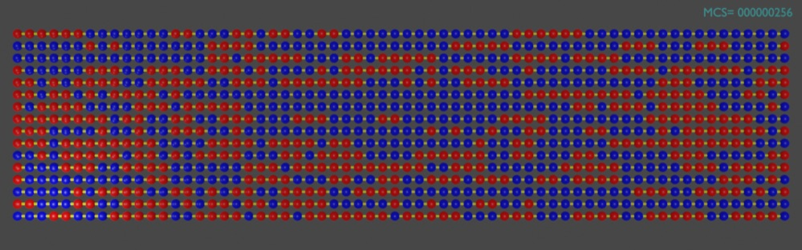
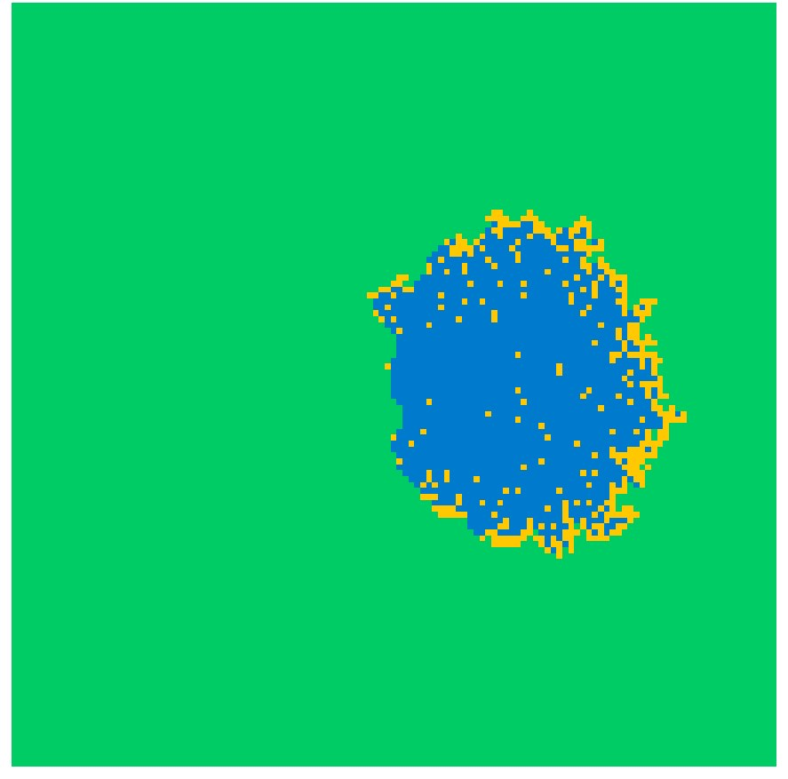
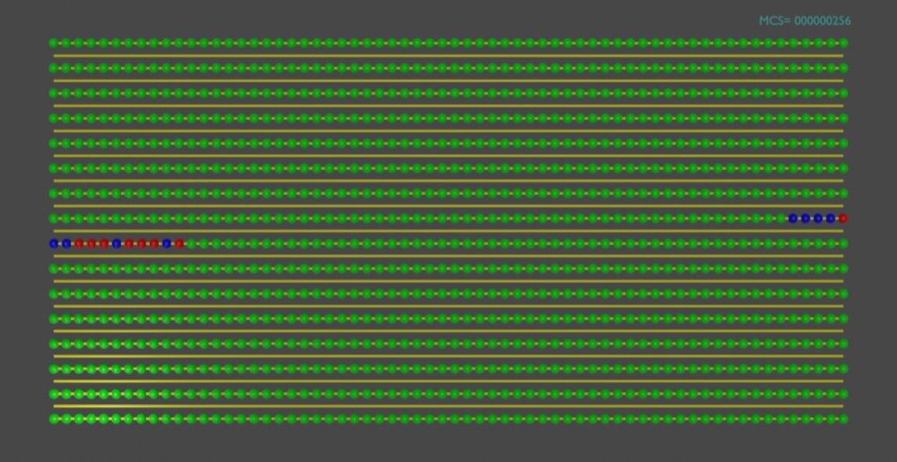
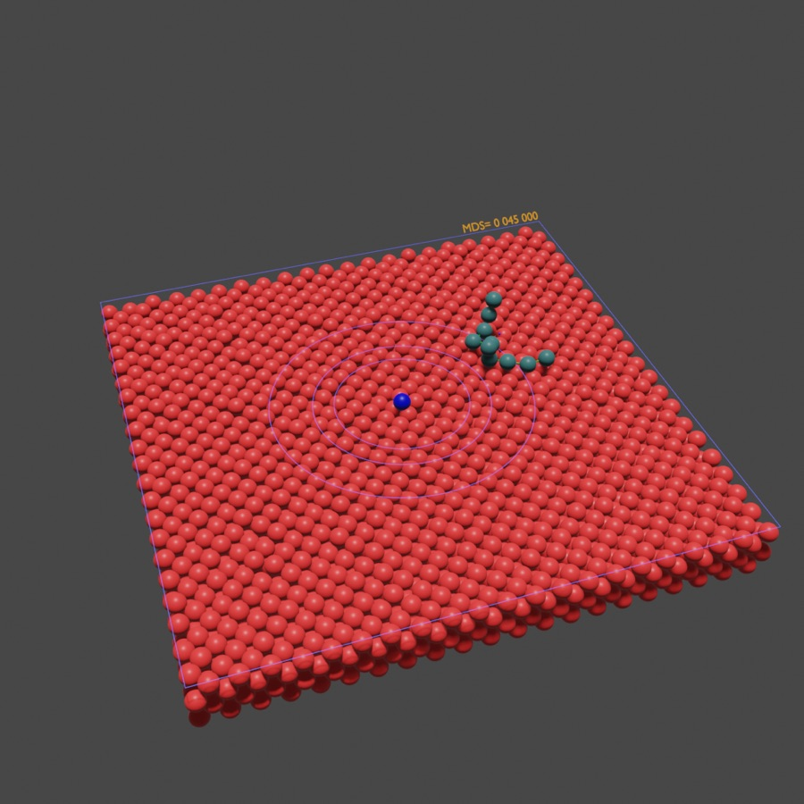

PhD in physics (Clarkson University, USA), with 30+ years of research in equilibrium and nonequilibrium statistical mechanics at Iowa State University and Ames Laboratory, the Theoretical Division of Los Alamos National Laboratory, and universities in Portugal and Brazil. I write and validate simulation code (Fortran, Python, C): kinetic Monte Carlo, molecular dynamics, reproducible random-number streams, statistical error analysis.

Physical Review Letters, Physical Review B and E, Journal of Chemical Physics, J. Stat. Mech., Physica A. 518 citations, h-index 10 (OpenAlex, October 2026).
In Portugal and Brazil. Taught quantum mechanics, thermodynamics, statistical physics and graduate simulation methods.
Physical Review Letters, Physical Review E, Physica A and Chaos.
One set of methods for spreading processes: lattice models whose kinetics follow a master equation, simulated with kinetic Monte Carlo over large ensembles of independent realizations, and analysed with the statistics needed to trust the result.

A lattice model of wildfire spread with and without wind. Its short-length-scale behaviour is published in Physica A. A study of wind-driven fronts at long length scales, on lattices up to 2049 sites across with 16,384 realizations per case, goes to Physical Review E in November 2026: the burned area approaches ballistic growth whatever the wind direction and strength, and the front fluctuations are consistent with KPZ scaling.
Next: spread over all eight directions of the Moore neighbourhood, lateral wind, and an explicit thermodynamic treatment.
Physica A 700, 131819 (2026). doi

A lattice epidemic model in which recovered individuals can be infected again. Two papers in preparation ask how much the spatial arrangement of the first cases matters, not just their number (spread out regularly, the same number of initial cases can reach more than five times as many sites as when clustered), and when an outbreak loses the memory of how it started.
Front picture introduced in a book chapter: Advances in Meteorology and Geophysics 2025, pp. 86-93.

Monte Carlo simulations of a polymer pinned by an attractive impurity on a crystalline substrate, and a new diffusion mechanism.
Polymers 14, 1459 (2022). doi
Earlier work: exact solutions of diffusion-limited reactions; random sequential adsorption and jamming; far-from-equilibrium nanostructures on metal surfaces, with experimental groups at Ames; Langevin dynamics with A. F. Voter. All publications
Consulting on simulation, code validation and expert review for AI training: Upwork profile.
Research record: ORCID 0000-0002-0252-6992 · LinkedIn